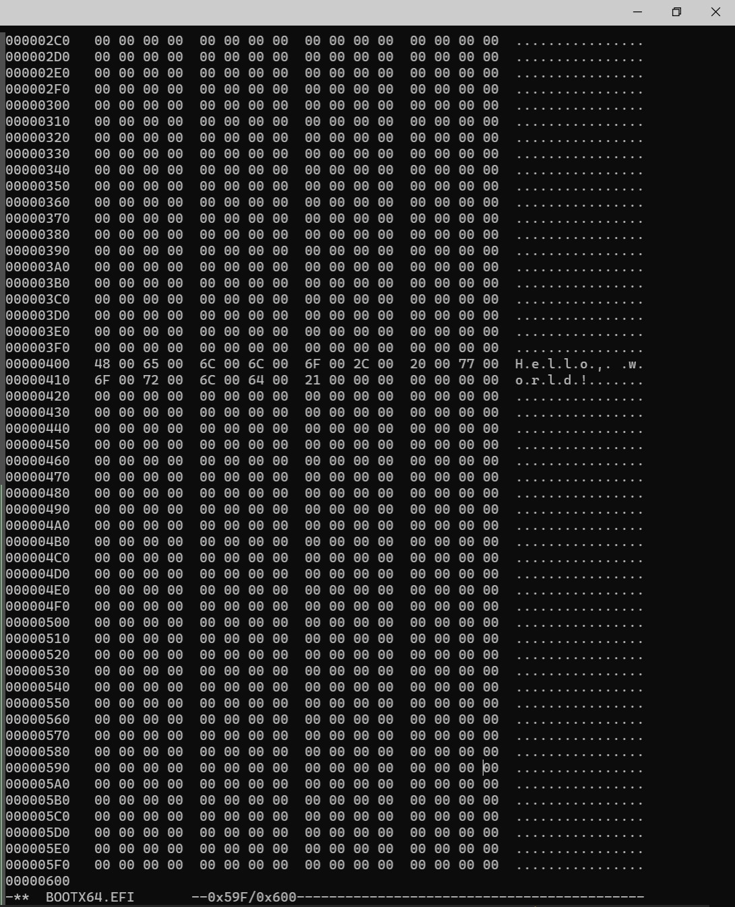
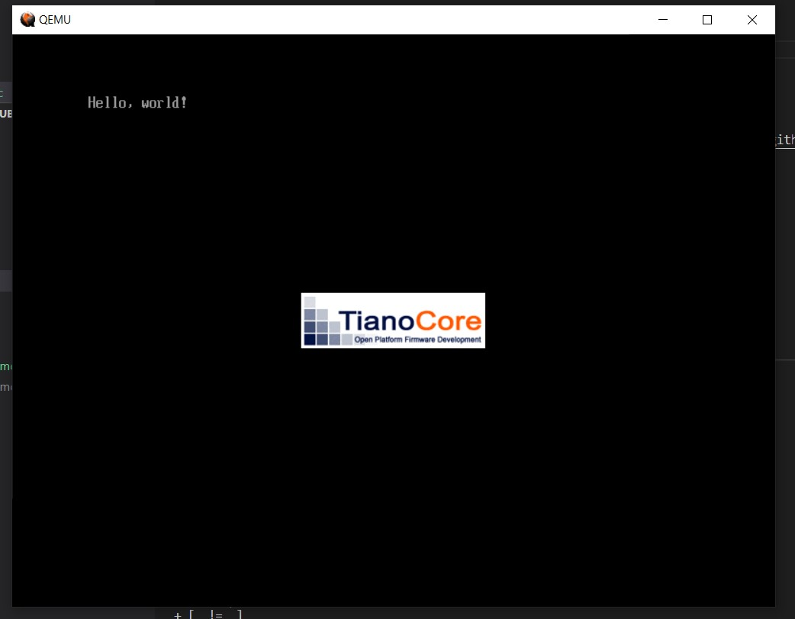

『ゼロからのOS自作入門』 (みかん本)
のやっていき記録

やっていくぞ pic.twitter.com/HQXCaWztCs
— oka ఒక (@nowohyeah) March 22, 2021
環境構築
uchan さんの script など
以下のリポジトリの説明に従って行う。
home directory に edk2 と osbook という directory がある状態になる。
VcXsrv
VcXsrv の設定は、みかん本の付録Aに書いてある内容では不充分だと思う。
- WSL2のX-ServerでGUI表示する際に「export DISPLAY=:0.0」が効かない - レガシー環境から脱却したい
- 元の GitHub issue -> Can't use X-Server in WSL 2 · Issue #4106 · microsoft/WSL
などに書いてあるが、 /etc/resolve.conf に書いてある IP アドレスを DISPLAY=xx.xx.xx.xx:0.0 に入れないと動かない。
cat /etc/resolv.conf | grep nameserver | awk '{print $2}'
のように IP address を取得できるので、以下を ~/.bash_profile などに書いておく。
export DISPLAY=$(cat /etc/resolv.conf | grep nameserver | awk '{print $2}'):0.0
第0章
MikanOS (みかのすと読むらしい) を WSL2 でビルドして QEMU で動かした～
— oka ఒక (@nowohyeah) March 27, 2021
WSL2 のメモリ消費バグがつらい#ゼロからのOS自作入門 pic.twitter.com/OMFjuo9BcI
WSL2 のメモリ枯渇問題については以下の記事のように対処すれば良いことが分かった。
RAM 4 GB の人権無視マシンを使っているので、 WSL への割り当ては 2 GB とした。 WSL2 再起動後に htop すると 2 GB になっていることが分かる。

第1章
binary editor で EFI file を作って QEMU で動かすのを目標にする。 USB メモリとかは面倒なのでやらない。けっこう進んだらやってみてもよいけど。
EFI ファイル作成
binary editor は本では okteta や Binary Editor Bz が紹介されているが、 CLI で使える hexedit でやってみる。
sudo apt install hexedit
touch BOOTX64.EFI
hexedit BOOTX64.EFI
打ち込んでいるところ

QEMU で起動
本当は qemu の command を打たないといけないが、用意されている script を使う。
$HOME/osbook/devenv/run_qemu.sh BOOTX64.EFI
まごころこめて手打ちした binary が起動すると感慨もひとしお。

C 言語で hello world
cd $HOME/osbook/day01/c
clang -target x86_64-pc-win32-coff -mno-red-zone -fno-stack-protector -fshort-wchar -Wall -c hello.c
lld-link /subsystem:efi_application /entry:EfiMain /out:hello.efi hello.o
$HOME/osbook/devenv/run_qemu.sh hello.efi
でさっきと同様に Hello world が表示される。
cmp BOOTX64.EFI ~/osbook/day01/c/hello.efi
で binary を比較すると
differ: byte 3, line 1
と出た。 hexedit で開くとその他の場所もけっこう違っていた。